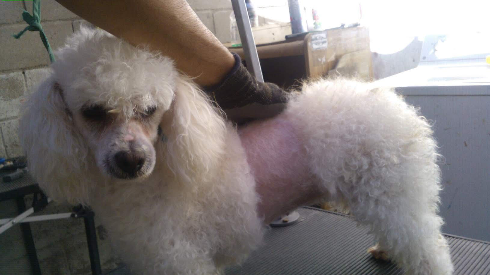

Servicio de Estética para Mascotas
En Patitas Felices, nos preocupamos por el bienestar y la apariencia de tu mascota.
Nuestro servicio de estética está diseñado para garantizar que tu mejor amigo se vea y se sienta increíble. solo ofrecemos el baño, ¿por qué? porque
el baño incluye:
- Limpieza de orejas
- Limpieza de glándulas anales
- Corte de pelo (opcional)
- Cepillado para eliminar pelo muerto
- Corte de uñas
- Limpieza de arrugas faciales (para razas como Pugs)
- Perfume especial para mascotas
- Opción de pañuelo o moños
¡Todo esto por solo $400 pesos!
Nuestros profesionales garantizan una experiencia relajante y placentera para tu mascota.
Caso 1: Antes, Durante y Después

Caso 2: Antes y Después